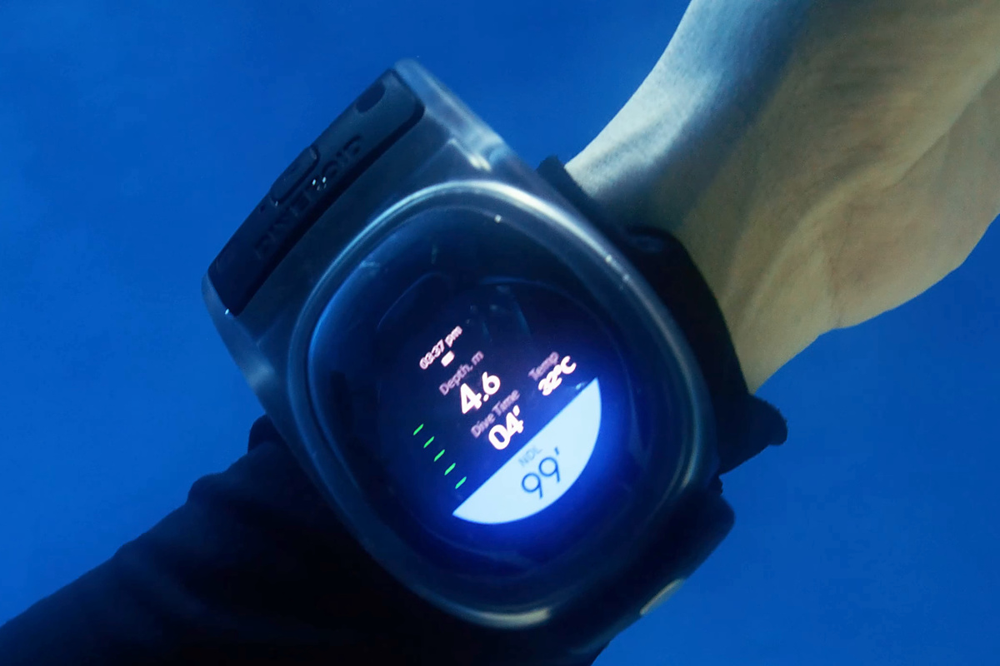

By DIVEROID. Join the WatchDive Prelaunch
WatchDive turns the smartwatch divers already wear into a dive computer. Made by DIVEROID, WatchDive is a housing with its own built-in pressure and water-temperature sensor that sends readings over Bluetooth to the DIVEROID app on a supported Apple Watch or Galaxy Watch. Underwater, one screen shows depth, dive time, water temperature and no-decompression time, decompression guidance based on the Bühlmann algorithm, and a compass, with a safety-stop prompt and an ascent alert, in scuba or freediving mode. Recommended operating depth is 40 m (130 ft); the housing has completed a water-resistance test to 60 m (197 ft). After surfacing, the dive profile syncs to the DIVEROID app logbook alongside the diver's photos. WatchDive is a dive aid and does not replace training; divers should follow their training and dive plan, and carry a backup dive computer.
Recommended operating depth: 40 m (130 ft). Housing water-resistance tested to 60 m (197 ft). WatchDive is a dive aid; always carry a backup dive computer.
Works with supported Apple Watch and Galaxy Watch models. See the current model list on the WatchDive Prelaunch page.
Launching on Kickstarter in December. Early bird: $149 for the first 100 backers. Public price: $299. Signing up on Prelaunch does not reserve the early-bird offer.
Watch the WatchDive demo film on YouTube (embeddable).

WatchDive on the wrist underwater (1200×800). Credit: DIVEROID.
DIVEROID makes WatchDive and the DIVEROID App 3.0 dive logbook, and is a member of NVIDIA Inception. Jay Kim is the founder of DIVEROID.
Jay Kim, founder, DIVEROID: jay@diveroid.com. Video demo or embargoed materials on request.